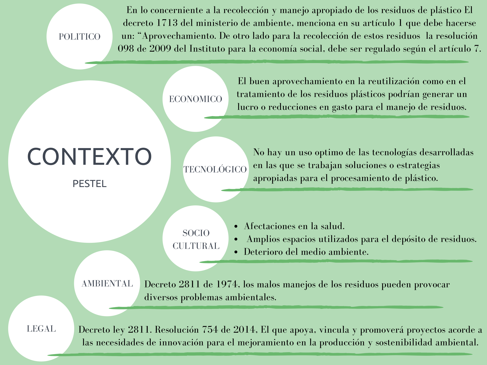
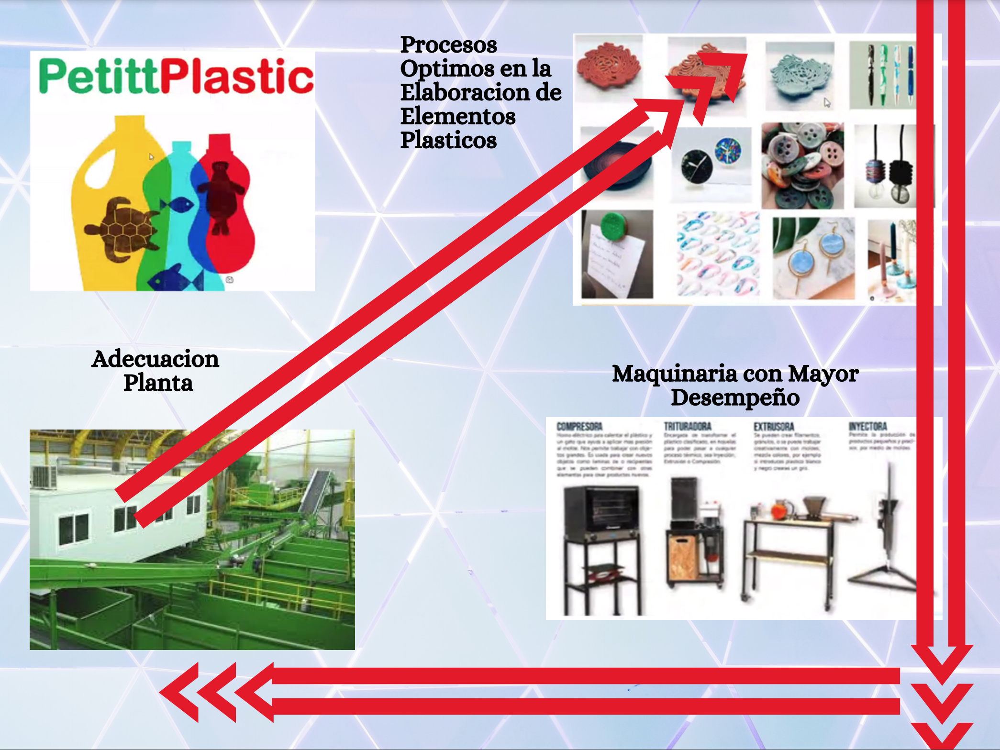
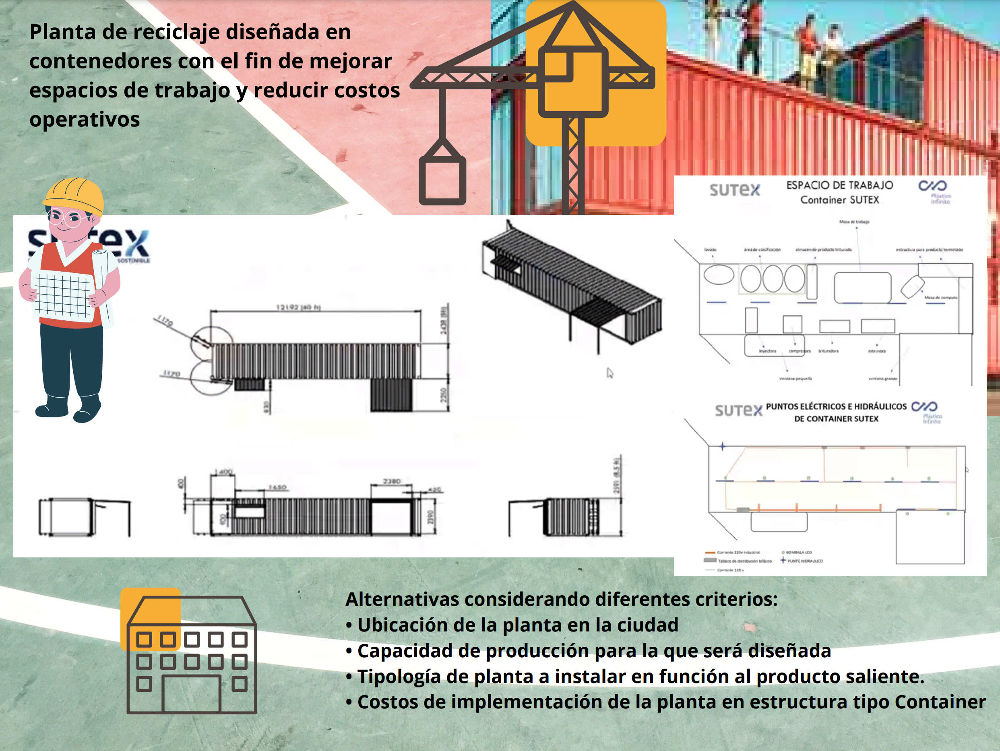
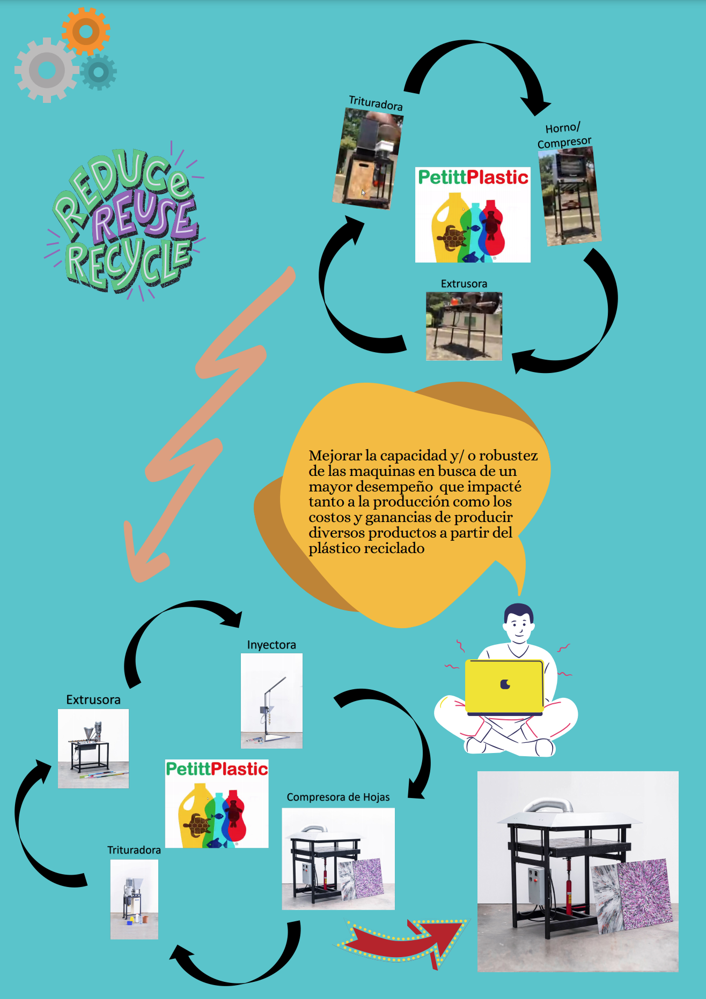

Actores
Posibles Soluciones




Referencias bibliográficas
- [1] Carlos Enguix. Economía Circular y plásticos: El camino hacia la sostenibilidad. Available: https://www.ainia.es/tecnoalimentalia/consumidor/economia-circular-plastico/
- [2] Dave Hakkens. Precious Plastic. Available: https://preciousplastic.com/
- [3] TATIANA ROJAS. COLOMBIA BUSCA TOMAR LA DELANTERA EN LA REGIÓN EN CONTROL DEL PLÁSTICO. Available: http://www.acoplasticos.org/index.php/mnu-noti/328-ns-191117
- [4] 200 EMPRESAS DE BOGOTÁ RECICLAN Y TRANSFORMAN CERCA DE 110 MIL TONELADAS DE PLÁSTICO POSCONSUMO AL AÑO. Available: http://www.acoplasticos.org/index.php/mnu-noti/330-ns-191125
- [5] Aproplast le da vida a la basura reciclada. Available: https://www.eltiempo.com/archivo/documento/MAM-2495764
- [6] MANUEL ARCHILA. PLAN DE NEGOCIOS PARA UNA EMPRESA DE RECICLAJE QUE VINCULE A RECICLADORES DE OFICIO CON INVERSIONISTAS PRIVADOS EN LA CIUDAD DE BOGOTA. Available: https://repository.javeriana.edu.co/bitstream/handle/10554/9484/tesis580.pdf
- [7] Atica. Available: https://www.atica.co/
- [8] Ministerio de Ambiente y Desarrollo Sostenible 2020. A 2018 Colombia tendrá una tasa de reciclaje del 20%. Available: https://www.minambiente.gov.co/index.php/noticias-minambiente/2291-a-2018-colombia-tendra-una-tasa-de-reciclaje-del-20
- [9] CASI EL 60 % DE LA BASURA DIARIA DE BOGOTÁ ES DESECHO PLÁSTICO. Available: https://derecho.uniandes.edu.co/es/informe-situacion-actual-de-los-plasticos-en-colombia
- [10] SIGNIFICADOS. (2013-2016). Significado de Impacto Ambiental. [Consulta: 15 de septiembre de 2020]. Available: www.significados.com/impacto-ambiental/
- [11] MINISTERIO DE SALUD Y PROTECCIÓN SOCIAL. Que es un plan de acción [en línea]. Available: https://www.minsalud.gov.co/Documentos%20y%20Publicaciones/Plan%20de%20acci%C3%B3n.pdf